[ 教学实施 ]
[ 课前准备 Preparation ]
[ 内容回顾 Review ]
轮播组件 <swiper> <swiper-item>
[ 理论讲解 Lecture on Theory ]
1. 概述 Overview
容器组件
可以容纳更多子项/内容；子项可以是任意元素；但是不能嵌套使用 <scroll-view>
当子项的尺寸总和超过容器时，只显示容器区域的子项
容器边缘的子项会显示部分，以便提示用户操作这里还有更多；或者使用符号提示
左右或上下滑动时，可以显示更多内容/超出容器的子项
可以设计为水平滚动或垂直滚动，不能兼得
水平方向，需要确保所有子项在一行
垂直方向，要显式的指定容器的高度
移动端特有
应用：图文内容展示、轮播、横向导航栏、商品、通信录和留言等长列表展示
2. 常见应用 Application
常见APP的设计中，都有它的影子，如下面各图红色覆盖区域
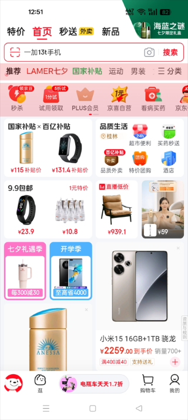
京东
淘宝
支付宝
个税
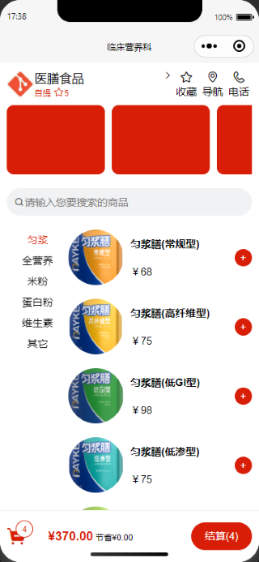
商品列表
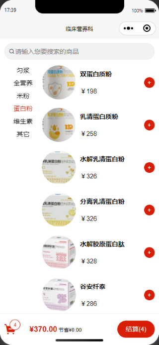
商品列表
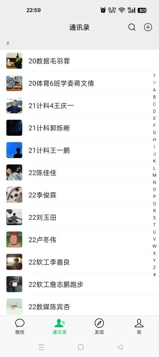
微信通信录
3. 基本使用 Usage
闭合标签
配合属性，可以定制功能丰富的业务模块
Skyline
模式支持更多属性，如滚动对齐
<scroll-view>
// 子项内容
</scroll-view>
通用属性
item
desc
scroll-x
允许横向滚动；布尔
scroll-y
允许纵向滚动；布尔；应显式指定高度
scroll-into-view
滚动到值为 id 的某子元素；id 不能以数字开头
scroll-with-animation
使用动画过渡；布尔
scroll-top
设置竖向滚动条位置
bindscroll
滚动时触发
WebView 特有属性
item
desc
enable-flex
水平方向启用 flexbox；布尔；默认 false
using-sticky
启用粘性定位 sticky；布尔；默认 false
[ 案例实操 Drill ]
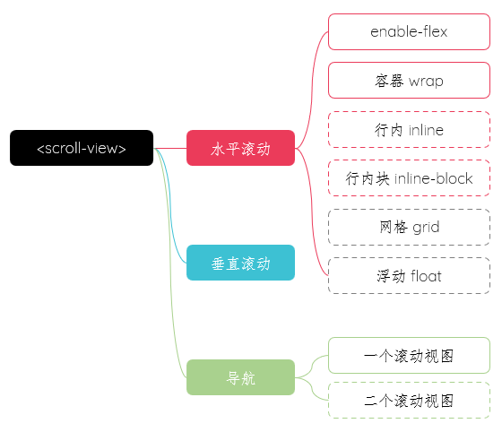
案例实施导图
[
1. 效果参考
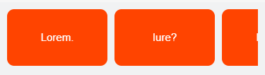
水平滚动左侧
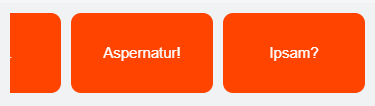
水平滚动右侧
2. 实现方案
实现1 小程序方案
指定水平方向 scroll-x
启用弹性盒子 enable-flex 属性
直接添加子项 item
<scroll-view class="scroll-view" scroll-x enable-flex>
<view class="item">Lorem.</view>
<view class="item">Iure?</view>
<view class="item">Ipsam.</view>
<view class="item">Aspernatur!</view>
<view class="item">Ipsam?</view>
</scroll-view>
并不是真正的弹性盒子
需要单独给每个子项 item 增加间隔
.scroll-view {
display: flex;
gap: 20rpx;// 无效
}
.item {
width: 40%;
background-color: #f40;
color: #fff;
aspect-ratio: 16/9;
border-radius: 20rpx;
margin-right: 20rpx;// 额外指定间隔
}
实现2 推荐方案
<scroll-view class="scroll-view" scroll-x>
<view class="wrap">
<view class="item">Lorem.</view>
<view class="item">Iure?</view>
<view class="item">Ipsam.</view>
<view class="item">Aspernatur!</view>
<view class="item">Ipsam?</view>
</view>
</scroll-view>
样式：更简单；其它UI请自行设计并完成
.wrap {
display: flex;
gap: 20rpx;
}
.item {
width: 40%;
background-color: #f40;
aspect-ratio: 16/9;
border-radius: 20rpx;
}
实现3 行内 inline 方案
<scroll-view class="scroll-view scroll-x">
<text class="text">Lorem.</text>
<text class="text">Eum.</text>
<text class="text">Rerum.</text>
<text class="text">Blanditiis?</text>
<text class="text">Officiis!</text>
</scroll-view>
参考样式
.scroll-view {
white-space: nowrap;
}
.text {
padding: 0 20px;
}
实现4 行内块 inline-block 方案
<scroll-view class="scroll-view scroll-x">
<view class="text">Lorem.</view>
<view class="text">Eum.</view>
<view class="text">Rerum.</view>
<view class="text">Blanditiis?</view>
<view class="text">Officiis!</view>
</scroll-view>
参考样式
.scroll-view {
white-space: nowrap;
}
.text {
display: inline-block;//必须
// display: inline; //ok
padding: 0 20px;
}
实现5 尝试网格 grid 方案
实现6 尝试浮动 float 方案
[
[
[
1. 效果参考
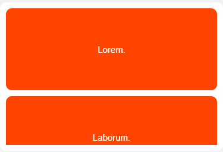
垂直滚动顶部
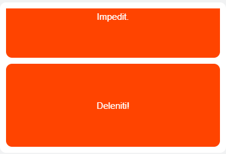
垂直滚动底部
2. 代码参考
指定垂直方向 scroll-y
可以直接使用子项 item
<scroll-view class="scroll-view" scroll-y>
<view class="item">Lorem.</view>
<view class="item">Iure?</view>
<view class="item">Ipsam.</view>
<view class="item">Aspernatur!</view>
<view class="item">Ipsam?</view>
</scroll-view>
必须显式的指定容器的高度
子项的高度可以由内容撑开
.scroll-view {
height: 500rpx;
}
.item {
height: 60%;
}
[
结构：内容区和导航区
内容区：使用 <scroll-view>；每个子项分配一个 id；不能以数值开头，通常使用自定义前缀和子项序号拼接，如 id='item12' 或 id='nav2'
导航区：可以使用普通元素或者使用 <scroll-view>，为每个子项添加事件，单击时，修改索引变量，触发内容区跳转到对应id的子项
类似的应用还有：留言定位、通信录定位
更多信息，请访问 列表渲染 wx:for 、事件 Events 和 绑定 Model
1. 效果参考
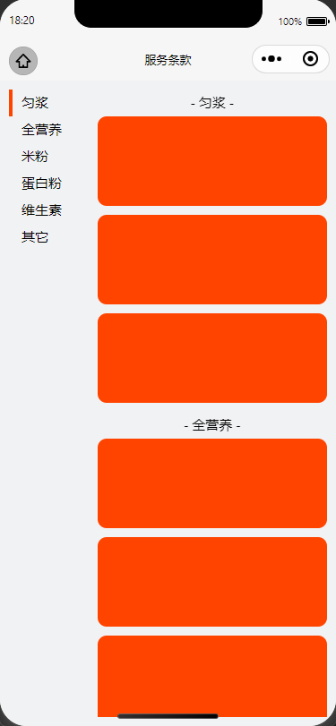
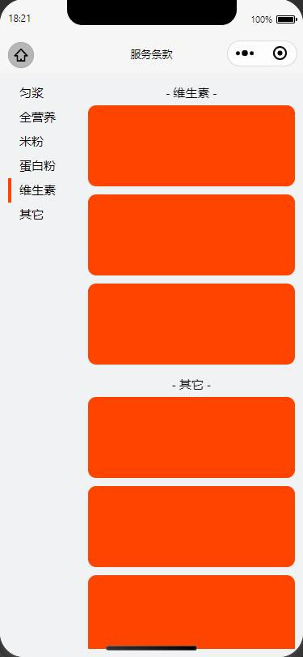
商品分类导航
2. 实现方案
方案1：1个 <scroll-view>、1个普通元素实现
适合导航分类少的场景
详细实现，请参考学习通资料区的示例
参考结构 - 内容区使用了嵌套列表渲染；导航区绑定事件，单击时，修改序号
<view class="wrap">
<view class="nav">
<view class="nav-item {{curInd==index?'active':''}}" wx:for='{{navs}}' wx:key="id" bind:tap="toView" data-ind="{{index}}">{{item.tag}}</view>
<view>
<scroll-view class="cont" scroll-y scroll-into-view="nav{{curInd}}" scroll-with-animation>
<view class="cont-item" wx:for="{{products}}" wx:key='id' id='nav{{index}}'>
<view class="cont-title">- {{item.title}} -</view>
<view class="cont-inner-item" wx:for="{{item.lists}}" wx:key="id">{{item.title}}</view>
</view>
</scroll-view>
</view>
参考数据：序号、导航数据（1个示例节点）、商品数据（1个示例节点）
data: {
curInd:0,
navs: [{
id: 0,
tag: '匀浆',
icon: 'icon-bread'
}],
products: [{
id: 0,
title:'匀浆',
lists: [{
id: 0,
image: '',
title: '匀浆膳',
desc: '',
price: ''
}]
}]
}
参考事件：单击导航项，获取当前序号
toView(e){
let curInd=e.target.dataset.ind;
this.setData({
curInd
})
}
方案1：2个 <scroll-view> 实现